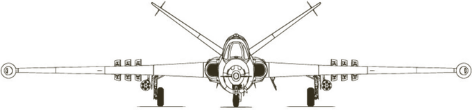
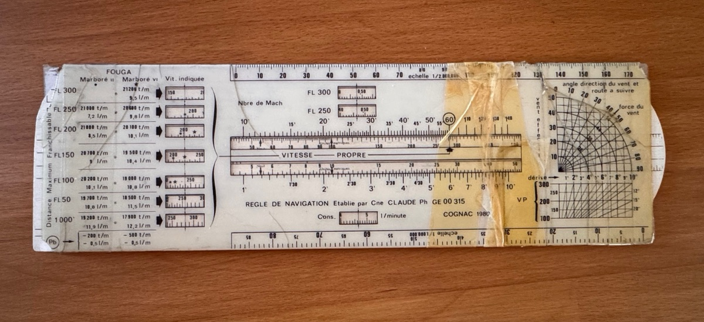

Le site a déménagé
Le site consacré au Fouga CM 170 R Magister (manuel, computeur de vol et règle de navigation) est désormais à l’adresse fougamagister.fr. Pensez à mettre à jour vos favoris.
Redirection automatique dans quelques secondes…
